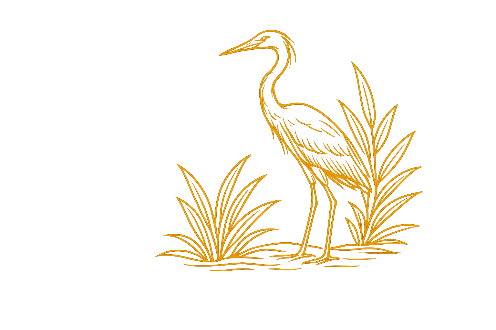

Sobre o Evento
O Programa de Pós-Graduação em Geografia, juntamente com os cursos de Bacharelado e Licenciatura em Geografia da UFMS – Campus de Aquidauana (CPAQ), promove o IX Workshop do PPGEO/CPAQ/UFMS e a 8ª Mostra de Pesquisa dos Cursos de Pós-Graduação e Graduação em Geografia.
O evento será realizado presencialmente no Campus de Aquidauana da UFMS e busca integrar pesquisadores, docentes, estudantes e a sociedade em torno do debate sobre ensino, território e gestão ambiental, considerando os desafios contemporâneos dos diferentes contextos do Cerrado e do Pantanal.
